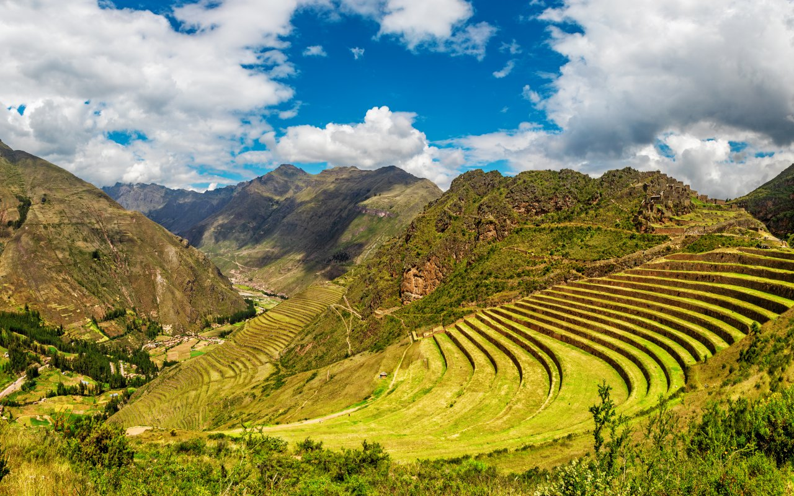
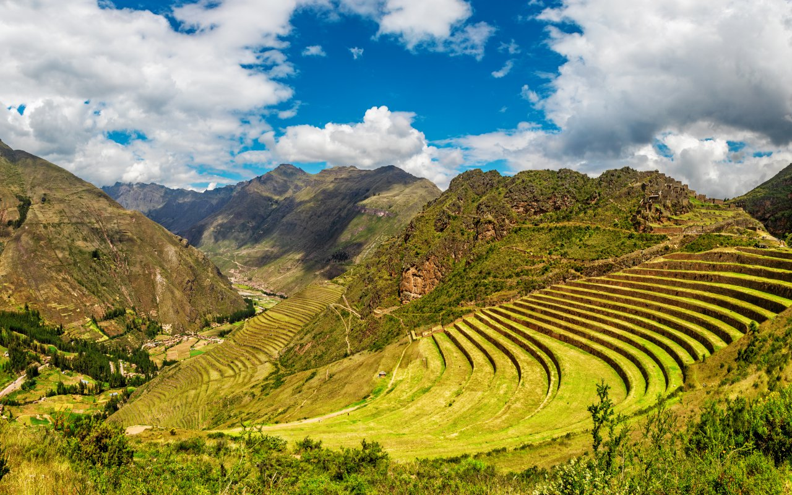

Machu Picchu
 

Déscription :
Plongez dans l'essence mystique des Andes péruviennes avec nos voyages au Machu Picchu. Nous offrons une variété de formules adaptées à tous les explorateurs en quête de découvertes inoubliables. Nos formules sont conçues pour vous immerger dans cette merveille archéologique, que vous souhaitiez une visite d'une semaine ou une expérience plus approfondie sur 12 jours. Explorez la citadelle inca légendaire, ses temples ancestraux et ses vues panoramiques époustouflantes. Optez pour cette déstination inoubliable, avec des visites guidées complètes et des temps libres pour explorer à votre rythme. Et admirer les paysages de toute beauté que cette merveille du monde peux vous offrir. De quoi passer de bonnes vacances.
Formules
Découverte
Jour 1 : Après votre trajet en avion de Paris vers Lima une navette vous conduira vers Cusco. Vous regragnerai l'Hôtel de votre choix.
Jour 2 : Vous aurai une visite guidée de Cusco pendant toute la journée pour pouvoir découvrir tous les vestiges historiques que cette ville renferme.
Jour 3 : Le lendemain, départ tôt le matin pour aller visiter la vallée sacrée des incas. Pour y découvrir les fabuleux paysages que les montagnes ont à vous offir et explorer les temples mytiques des incas.
Jour 4 : Votre guise sera de mise pour cette journée, vous reposer ou bien visiter les recoins de Cusco.
Jour 5 : Voici le grand jour, la visite guidée que vous attendez tant le "Machu Picchu". Après un départ tôt le matin, un randonnée vous attend pour la montée du Machu Picchu, puis une visite guidé l'après-midi et un retour a Cusco dans la soirée
Jour 6 : Pour cet avant dérnier jour, nous vous proposons de découvrir de nouvelles saveurs et activites du coin
Jour 7 : Après ce voyage, départ le matin et retour vers l'aéroport de Lima pour retourner à Paris
Expédition
Jour 1 : Après votre trajet en avion de Paris vers Lima une navette vous conduira vers Cusco. Vous regragnerai l'Hôtel de votre choix.
Jour 2 : Vous aurai une visite guidée de Cusco pendant toute la journée pour pouvoir découvrir tous les vestiges historiques que cette ville renferme.
Jour 3 : Le lendemain, c'est le début de votre première éscale de votre séjour. Départ tôt le matin pour aller visiter la vallée sacrée des incas. Pour y découvrir les fabuleux paysages que les montagnes ont à vous offir et explorer les temples mytiques des incas. La nuit se passera dans une auberge.
Jour 4 : Vous quitterez la valée dans la matiné pour ensuite vous rendre à Machu Picchu Pueblo
Jour 5 : Départ de Machu pichu pueblo pour la visite guidée que vous attendez tant le "Machu Picchu". Après un départ tôt le matin, un randonnée vous attend pour la montée du Machu Picchu, puis une visite guidé l'après-midi
Jour 6 : Fin de la première escale et retour à Cusco
Jour 7 : Votre guise sera de mise pour cette journée, vous reposer ou bien visiter les recoins de Cusco.
Jour 8 : Début de la deuxième éscale vers le "Lago Titicaca" avec un arret en milieu de trajet pour aller voir les mgnifiques Laguna muyna et Laguna Waton puis arrivé au Lago Titicaca. La nuit se passera dans une auberge
Jour 9 : Visite du Lago Titicaca puis retour de nuit vers Cusco
Jour 10 : Deuxieme quartier libre pour pouvoir profiter de la ville
Jour 11 : Pour cet avant dérnier jour, nous vous proposons de découvrir de nouvelles saveurs et activites du coin
Jour 12 : Après ce voyage, départ le matin halte à Ayacucho pour faire une pause et manger retour vers l'aéroport de Lima pour retourner à Paris
Notre sélection d'hotels
| Image de l'hôtel | Description | Étoiles |
|---|---|---|
 |
Nom: Capac Rimacpampa Lieu: Limacpampa Chico 493, Cusco City Centre, Cusco, Pérou Description: L’établissement Capac Rimacpampa se situe dans le centre de Cusco, à respectivement 1,6 km et 500 mètres de ces lieux d’intérêt : Gare de Wanchaq et Religious Art Museum. Vous séjournerez à proximité de ces lieux d’intérêt prisés : Santo Domingo Church, Church of the Company et Holy Family Church. Cet établissement non-fumeurs vous accueille à 500 mètres de : Twelve Angled Stone. Prix par nuit: 40€ Pour plus d'info |
Note :8.1/10 |
 |
Nom:AITANA'S HOUSE - SAN BLAs Lieu: Choqechaka, Cusco City Centre, Cusco, Pérou Description: Proposant un jardin et une connexion Wi-Fi gratuite, l’établissement AITANA'S HOUSE - SAN BLAs se situe dans le centre de Cusco, près de ces lieux d’intérêt : Gare de Wanchaq, Twelve Angled Stone et Religious Art Museum. Chaque hébergement est pourvu d’un patio avec vue sur la ville, d’une télévision à écran plat et d’un espace salon. Vous bénéficierez également d’une cuisine bien équipée, ainsi que d’une salle de bains privative comprenant une douche. Certains logements sont dotés d’une terrasse et/ou d’un balcon avec une vue sur la montagne ou le jardin. Prix par nuit: 49€ Pour plus d'info |
9.1/10 |
 |
Nom:Nao Victoria Hostel Lieu: Calle Procuradores, 357, Cusco City Centre, Cusco, Pérou Description: L’établissement Nao Victoria Hostel se trouve à Cusco,
à 3 km de ce lieu d’intérêt : Gare de Wanchaq. Il propose un service de concierge, un restaurant, un bar, des hébergements non-fumeurs, ainsi qu'une connexion Wi-Fi gratuite dans l’ensemble de ses locaux.
Cet hôtel 3 étoiles propose un service d'étage et une réception ouverte 24h/24.
Vous pourrez prendre un verre au snack-bar sur place. Prix par nuit: 55€ Pour plus d'info |
9.3/10 |